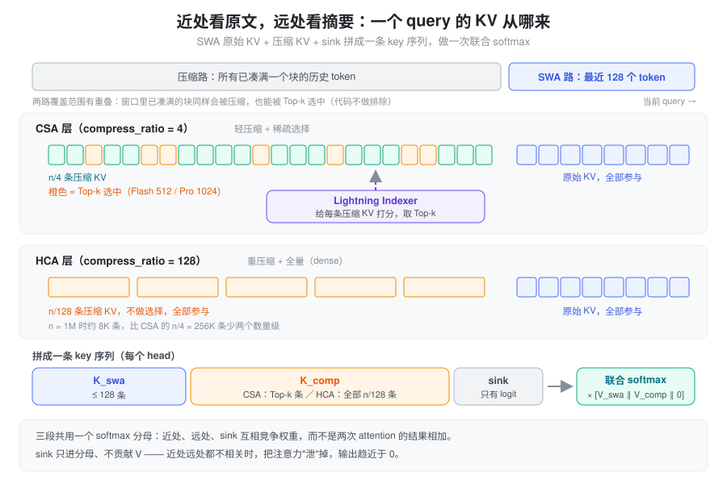
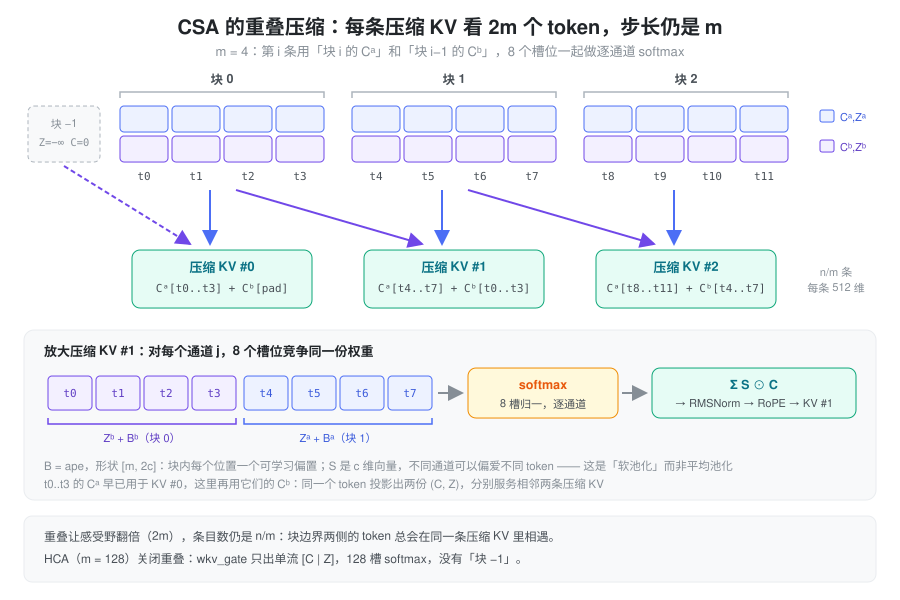
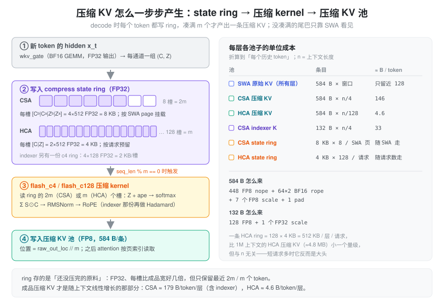

CSA / HCA = 在序列方向上压缩 KV cache：近处用 SWA 看原文，远处只看”每 m 个 token 一条”的摘要。
DeepSeek-V4 的每个 attention 层按
compress_ratio 分成三种：
0：只有 SWA（滑动窗口 128），不压缩；4：CSA（Compressed Sparse Attention），轻压缩 + Lightning Indexer 稀疏选择；128：HCA（Heavily Compressed Attention），重压缩 + 全量 attention。
两者共用同一个压缩算子，只是超参不同。下文先讲要解决什么问题，再讲压缩算子和两种用法，最后对照 SGLang 的 KV cache 布局与实现。
问题：V3.2 省了算力，没省显存
V3.2 的 DSA 用 Lightning Indexer 给每个 query 选 top-k 个历史 token，把 attention 的计算量从 O(n) 降到 O(k)。但被选的对象仍然是逐 token 的原始 KV：cache 里每个历史 token 都得留着，因为不知道哪天会被选中。上下文到 1M 时，cache 的条目数就是 1M × 层数。
想让 cache 变小，只剩一条路：不再为每个 token 单独存一条 KV。这里有两个约束：
- 近处的信息不能糊。生成下一个 token 最依赖的是最近几十上百个 token，这部分必须是原文精度；
- 远处的信息不能丢。压缩可以有损，但不能整段截断——否则就退化成纯 SWA。
所以 V4 的思路是把”近”和”远”拆开处理，各用一种表示。
设计：近处看原文，远处看摘要
- 近处：SWA 保留最近
window_size = 128个 token 的原始 KV，这部分永远不压缩，每层都有； - 远处：每 m 个 token 压成一条压缩 KV（m=4 或 128），cache 条目数变成 n/m；
- 合并：两路的 key 拼成一条序列，再加一个可学习的 sink，做一次联合 softmax。

写成公式，每个 head i 的输出是：
\mathbf{o}_{t,i} = \mathrm{softmax}\!\left(\frac{\mathbf{q}_{t,i}\,\big[\,K^{\text{swa}}_t \,\Vert\, K^{\text{comp}}_t\,\big]^{\top} \;\Vert\; s_i}{\sqrt{d}}\right) \cdot \big[\,V^{\text{swa}}_t \,\Vert\, V^{\text{comp}}_t \,\Vert\, 0\,\big]
- K^{\text{comp}}_t 在 CSA 层是 indexer 选出的 top-k 条，在 HCA 层是全部 n/128 条；
- 三段共用一个 softmax 分母，所以近处和远处是在竞争权重，不是两次 attention 的结果相加——模型自己学会什么时候依赖近处、什么时候依赖远处摘要；
- s_i 是
attn_sink，每个 head 一个可学习标量，只进分母、不贡献 V。近处远处都不相关时，权重”泄”到 sink 上，输出趋近于 0。
压缩算子：逐通道 softmax 的软池化
“每 m 个 token 压成一条”最朴素的做法是平均池化，但平均会把块内所有 token 一视同仁。V4 的做法是让每个 token 自己给出一个”想被保留多少”的打分，再按打分做加权和：
- 每个 token 的 hidden h_t 过一个线性层，同时得到内容 C_t 和打分 Z_t（都是 c=512 维）；
- 块内每个位置再加一个可学习的位置偏置 B（代码里叫
ape）； - 在块内的 token 之间做 softmax 得到权重 S，对 C 加权求和；
- 结果过 RMSNorm、RoPE，就是一条压缩 KV。
关键在于 softmax 是逐通道的：S 是 c 维向量而不是标量，不同通道可以偏爱块内不同的 token。这让压缩更像”每个特征维度各自挑最有用的 token”，而不是整体取平均。
CSA 的重叠窗口
m=4 时块很短，一个语义单元很容易被块边界切开。CSA 的补救是重叠：每个 token 投影出两份 (C, Z)——(C^a, Z^a) 服务于自己所在的块，(C^b, Z^b) 服务于下一个块。于是第 i 条压缩 KV 由块 i 的 C^a 和块 i-1 的 C^b 共 2m 个槽位共同产生，感受野翻倍，但步长仍是 m，条目数仍是 n/m。

\left[S^a_{mi:m(i+1)-1};\; S^b_{m(i-1):mi-1}\right] = \operatorname{Softmax}_{\text{row}}\!\left(\left[Z^a_{mi:m(i+1)-1} + B^a;\; Z^b_{m(i-1):mi-1} + B^b\right]\right)
C_i^{\text{Comp}} = \operatorname{RoPE}\!\Big(\operatorname{Norm}\Big(\sum_{j=mi}^{m(i+1)-1} S_j^a \odot C_j^a + \sum_{j=m(i-1)}^{mi-1} S_j^b \odot C_j^b\Big)\Big)
\odot 是逐元素乘；\text{Softmax}_{\text{row}} 在 Z^a, Z^b 合起来的 2m 个元素上归一化（对每个通道独立做）。
i = 0 时没有前一块：Z^b 用 -\infty 填充、C^b 用 0 填充。每条压缩 KV 来自 2m 个 token，但第 i 条用到的 C^b 与第 i-1 条用到的 C^a 来自同一批 token，所以序列长度仍压缩为 1/m。
HCA：同一个算子，关掉重叠
HCA 用 m=128，一条压缩 KV 吃 128 个 token，边界 token 的相对贡献只有 \sim 1/128，重叠的收益很小，代价却是双倍的投影参数和 kernel 带宽。所以 HCA 只保留单流 (C, Z, B)，在 128 个槽位上做 softmax：
S_{mi:m(i+1)-1} = \operatorname{Softmax}_{\text{row}}\!\left(Z_{mi:m(i+1)-1} + B\right), \qquad C_i^{\text{Comp}} = \operatorname{RoPE}\!\Big(\operatorname{Norm}\Big(\sum_{j=mi}^{m(i+1)-1} S_j \odot C_j\Big)\Big)
公式上，HCA 就是 CSA 把 C^a/C^b、Z^a/Z^b、B^a/B^b 各塌缩成一份、去掉”块 −1”。
CSA：轻压缩 + 稀疏选择
m=4 压得轻，信息损失小，但条目仍有 n/4 条——1M 上下文下是 256K 条，每步全读一遍并不比 V3.2 便宜。所以 CSA 在压缩之后再接一级 Lightning Indexer，只挑 top-k 条参与 attention。这就是”轻压缩 + 稀疏选择”的两级方案：压缩管显存，稀疏管算力。
Indexer 本身也是一个小 attention，而且有自己的一份压缩 K（独立的压缩器，head_dim = 128，压缩后再做 Hadamard 旋转以便 FP8 量化）：
\begin{aligned} &K^{\text{IComp}} = \text{Compressor}_{\text{indexer}}(h) \\ &q^I_t = \left[ q_{t,1}^I; \dots; q_{t,n_h^I}^I \right] = \text{Hadamard}\big(\text{RoPE}(W^{\text{IUQ}} \cdot c^Q_t)\big) \\ &w^I_t = \left[ w_{t,1}^I; \dots; w_{t,n_h^I}^I \right] = \frac{W^w \cdot h_t}{\sqrt{c^I \cdot n^I_h}} \\ &I_{t,s} = \sum_h w^I_{t,h} \cdot \text{ReLU}\big( q^I_{t,h} \cdot K^{\text{IComp}}_{s} \big) \\ &\mathcal{C}_t^{\text{SprsComp}} = \left\{ C_s^{\text{Comp}} \mid I_{t,s} \in \text{Top-k}(I_{t,:}) \right\} \end{aligned}
- c^Q_t = h_t W^{DQ} 是主
attention 的 Q 低秩中间量（
wq_a+q_norm），indexer 的 Q 直接从它升维，不再单独过一遍 hidden； - I 上标都表示”服务于 indexer”：n^I_h = 64 个 head，c^I = 128；
- 每个 head 的权重 w^I 是线性投影乘缩放，没有 softmax；
- K^{\text{IComp}} 与主压缩 KV 一一对应（同样每 4 个 token 一条、写入同一个位置），所以 indexer 选出的下标可以直接拿去读主压缩 KV；
- top-k 在 Flash 配置上是 512，Pro 配置上是 1024（后端只接受这两个值）。
top-k 的选择范围不排除 SWA 窗口。 indexer 对全部 \lfloor n/4 \rfloor 条压缩 KV 打分，其中包括那些块完全落在最近 128 个 token 内的条目。所以同一段近处的内容可能既以原文形式出现在 K^{\text{swa}} 中、又以摘要形式出现在 K^{\text{comp}} 中。反过来，最后一个还没凑满 4 个 token 的块不会有压缩 KV，只能靠 SWA 看到。
一次 CSA 层 decode 的 key 序列形状（每个 head，d = head_dim = 512）：
| 段 | 条数 | 来源 |
|---|---|---|
| K^{\text{swa}} | W = \min(n, 128) | SWA 原始 KV |
| K^{\text{comp}} | \min(k, \lfloor n/4 \rfloor) | 按 top-k 下标读出的压缩 KV |
| sink | 1（只有 logit） | attn_sink[i] |
q_{t,i} \cdot K^\top
得到 W+k+1
个分数，跨三段归一化后对 [V^{\text{swa}} \Vert V^{\text{comp}}
\Vert 0] 加权，输出仍是 [512]。V4 是
MQA（num_key_value_heads = 1），K 与 V
共用同一份 512 维向量。

HCA：重压缩 + 全量
m=128 压得狠，1M 上下文压完只剩约 8K 条，已经接近 CSA top-k 的数量级，不需要再做稀疏选择：HCA 层不创建 indexer，attention 直接读全部 \lfloor n/128 \rfloor 条压缩 KV，再拼上 SWA 和 sink。
| 维度 | CSA（compress_ratio = 4） |
HCA（compress_ratio = 128） |
|---|---|---|
| 压缩倍率 m | 4 | 128 |
| 重叠 | 是，双流 C^a/C^b, Z^a/Z^b | 否，单流 C, Z |
| softmax 槽数 | 2m = 8 | m = 128 |
压缩器投影 wkv_gate |
hidden → 4c | hidden → 2c |
位置偏置 ape |
[4, 2c] | [128, c] |
| 远处 KV 选择 | Lightning Indexer + top-k | 无，全量 |
| 每步读的压缩条目 | \le k（与 n 无关） | n/128（随 n 线性增长，但斜率很小） |
| 额外参数 | indexer 的 wq_b、weights_proj
和它自己的压缩器 |
无 |
两者共用的部分——MLA 风格的低秩
Q、RMSNorm、RoPE、attn_sink、Grouped Output
Projection、以及同一个 attention kernel 调用——完全不变。
层间分工
config.compress_ratios
是一个按层的列表，三种层交替铺开。仓库里没有附带 checkpoint
的
config.json，测试代码注释里记录的模式是：
- Flash：
[0, 0, 4, 128, 4, 128, ..., 0] - Pro：
[128, 128, 4, 128, 4, 128, ..., 0]
即除了首尾少数几层，CSA 与 HCA
逐层交替。一种合理的理解是：CSA
层负责”能精确地找回远处某段细节”，HCA
层负责”粗粒度地看到整段上下文”，交替排布让每隔一层就有一次精确检索、一次全局概览。MTP（NextN）层固定为
0，只有 SWA。
KV cache：成品与原料
压缩 KV 不是一次算出来的。decode 时 token 一个一个到来，凑满一个块之前没法做 softmax，所以每层还要有一块 compress state：一个环形缓冲（ring），存最近几个 token 投影出来、还没压完的 (C, Z)。整个过程是”原料进 ring → 凑满 m 个触发一次压缩 → 成品进压缩 KV 池”：

- ring 存的是原料：FP32，每槽比成品宽好几倍，但只保留最近 2m（CSA，因为重叠要回看上一块）或 m（HCA）个 token；
- 压缩 KV 池存的是成品：与 SWA 原始 KV 同一种 FP8 布局，584 B/条，随上下文线性增长；
- CSA 的 ring 挂在 SWA page 上（每个 SWA 页一个 8 槽 ring），HCA 的 ring 按请求预留（每请求 128 槽）。
一个 token 摊到多少字节
SGLang 在启动时按”每个 full token
摊到的字节数”切分显存，各项和上图一一对应（DSV4PoolConfigurator._get_bytes_per_full_token）：
bytes_per_full_token = (
swa_ratio * kv_bytes * L_total # ① SWA 原始 KV，每层都有
+ 1/4 * kv_bytes * L_c4 # ② CSA 压缩 KV
+ 1/128 * kv_bytes * L_c128 # ③ HCA 压缩 KV
+ 1/4 * indexer_bytes * L_c4 # ④ CSA indexer K
+ swa_ratio * c4_state_ratio * c4_state_bytes * L_c4 # ⑤ CSA state ring
+ 0 # ⑥ HCA state ring：不按 token 摊
+ swa_ratio * c4_state_ratio * c4_indexer_state_bytes * L_c4 # ⑦ indexer state ring
)| 符号 | 值 | 含义 |
|---|---|---|
kv_bytes |
584 | 448 FP8 nope + 64×2 BF16 rope + 7 个 FP8 scale + 1 pad |
indexer_bytes |
132 | 128 FP8 + 1 个 FP32 scale |
swa_ratio |
0.1 | SWA 池容量 = full token 容量的 10%（DSV4 强制设置） |
c4_state_ratio |
8 / 128 | 每个 SWA 页（128 token）配一个 8 槽 ring |
c4_state_bytes |
8192 | 4 \times 512 FP32：[C^b \vert C^a \vert Z^b \vert Z^a] |
c4_indexer_state_bytes |
2048 | 4 \times 128 FP32 |
HCA 的 ring 改成按请求数单独预留：每层每请求 128 \times 2 \times 512 \times
4\,\text{B} = 512\,\text{KB}，总量 ≈
max_running_requests × 512 KB × L_c128。它与上下文长度无关——1M
上下文时只是 HCA 压缩 KV（≈4.8
MB/层）的零头，但短请求、高并发时反而是不可忽视的固定开销。
以 Flash 配置粗算（43 层、按上面的交替模式取 L_{c4} = L_{c128} = 20，层数以实际 checkpoint 为准）：
| 项 | 计算 | B / full token |
|---|---|---|
| ① SWA | 0.1 \times 584 \times 43 | 2511.2 |
| ② CSA KV | 0.25 \times 584 \times 20 | 2920 |
| ③ HCA KV | 584 / 128 \times 20 | 91.25 |
| ④ indexer K | 0.25 \times 132 \times 20 | 660 |
| ⑤ CSA ring | 0.1 \times 0.0625 \times 8192 \times 20 | 1024 |
| ⑦ indexer ring | 0.1 \times 0.0625 \times 2048 \times 20 | 256 |
| 合计 | ≈ 7462 |
外加 HCA ring 每请求约 512\,\text{KB} \times 20 = 10\,\text{MB}。可以看到真正随上下文增长的大头是 ② CSA 压缩 KV；HCA 压缩 KV 几乎可以忽略。
- 开启 HiSparse 时 CSA 压缩 KV 的设备池会再缩小
c4_shrink_factor倍（c4_frac = 1/(4 × c4_shrink_factor)，池类型换成HiSparseC4DevicePool）； - 开启投机解码时 ring 会翻倍（CSA 16 槽、HCA 256 槽），且总量再乘 (L+1)/L 计入 draft 层；
- state 默认 FP32，可通过
SGLANG_DSV4_COMPRESS_STATE_DTYPE改成 BF16；SGLANG_OPT_USE_ONLINE_COMPRESS打开后 HCA 改为在线 softmax，ring 只剩 1 个 (\max, \text{sum}, kv) 槽。
在 SGLang 里的落点
一层 attention 由
MQALayer（srt/models/deepseek_v4.py）构造，按
compress_ratio 决定挂哪些子模块：
self.compressor = None
self.indexer = None
if self.compress_ratio in (4, 128):
self.compressor = Compressor(..., compress_ratio=self.compress_ratio, head_dim=self.head_dim, rotate=False)
if self.compress_ratio == 4:
self.indexer = C4Indexer(...) # 内部还有一个 Compressor(ratio=4, head_dim=128, rotate=True)| 概念 | 代码位置 |
|---|---|
| 压缩器（CSA/HCA 同一个类） | Compressor，srt/layers/attention/dsv4/compressor.py：overlap = (ratio == 4)、coff = 1 + overlap、wkv_gate: hidden → 2·coff·head_dim、ape: [ratio, coff·head_dim] |
| 压缩 kernel | kernels/jit/csrc/deepseek_v4/c4.cuh（flash_c4_decode/prefill）、c128.cuh（flash_c128_decode/prefill），由
compress_forward JIT 调用；压缩后
compress_fused_norm_rope_inplace 做 RMSNorm +
RoPE |
| ring 寻址 | create_paged_compressor_data：CSA 用
swa_page * ring + swa_loc % ring，HCA 用
req_pool_idx * ring + pos % ring |
| Indexer | C4Indexer，srt/layers/attention/dsv4/indexer.py：q
侧 fused_q_indexer_rope_hadamard_quant，logits
默认 deep_gemm.fp8_paged_mqa_logits，再
topk_transform_512 |
| KV 池 | DeepSeekV4TokenToKVPool，srt/mem_cache/deepseek_v4_memory_pool.py：swa_kv_pool、c4_kv_pool、c128_kv_pool、c4_indexer_kv_pool、各层
CompressStatePool |
| 显存切分 | DSV4PoolConfigurator，srt/model_executor/pool_configurator.py |
| attention | DeepseekV4AttnBackend.forward，srt/layers/attention/deepseek_v4_backend.py |
两个值得知道的实现细节：
- 三段拼接是在 kernel 里完成的，不是在 Python 里
concat。 backend 对所有层都调用同一个
flash_mla_with_kvcache：k_cache+indices指向 SWA 窗口，extra_k_cache+extra_indices_in_kvcache指向压缩 KV（CSA 传 top-k 下标，HCA 传全部页下标），attn_sink单独传入。compress_ratio = 0时 extra 为空，就是纯 SWA。大批量 prefill 会改走flash_mla_sparse_fwd，语义相同； - 压缩只在块凑满时发生。 decode
每一步都把当前 token 的 (C,
Z) 写进 ring，但只有
seq_len % m == 0的那一步 kernel 才真正产出一条压缩 KV，写到raw_out_loc // m。CSA 那一步要读 8 个槽（本块 4 + 上一块 4），这也是它的 ring 必须是 2m 的原因。
Grouped Output Projection
这一节与 KV 压缩无关，但同样属于 V4 attention 层的改动，三种层（0 / 4 / 128）都一样。
问题：attention 输出是 n_h \cdot c 维（Flash 是 64 \times 512 = 32768），直接一个 W_o \in \mathbb{R}^{d \times n_h c} 投回 hidden，参数和算力都很大。
做法：分组 + 低秩，两步完成：
- 把 n_h 个 head 的输出切成 g = 8 组，每组 n_h c / g 维；
- 每组用自己的矩阵 W_{o,a}^{(i)} 独立降到 d_g = 1024
维（组间不混合，
wo_a）； - 把 g 组拼成 g \cdot d_g = 8192 维，再用 W_{o,b} 投到 d（
wo_b）。
\mathbb{R}^{n_h c} \xrightarrow{\text{切 } g \text{ 组}} \mathbb{R}^{g \times \frac{n_h c}{g}} \xrightarrow{W_{o,a}^{(i)}} \mathbb{R}^{g \times d_g} \xrightarrow{\text{concat}} \mathbb{R}^{g d_g} \xrightarrow{W_{o,b}} \mathbb{R}^{d}
成立的前提是 d_g < n_h c / g，即每组确实被压缩了。
| Flash（n_h=64,\ d=4096） | Pro（n_h=128,\ d=7168） | |
|---|---|---|
| 朴素 W_o | 4096 \times 32768 \approx 1.34 \times 10^8 | 7168 \times 65536 \approx 4.70 \times 10^8 |
wo_a：d_g \cdot
n_h c |
\approx 3.36 \times 10^7 | \approx 6.71 \times 10^7 |
wo_b：d \cdot g
d_g |
\approx 3.36 \times 10^7 | \approx 5.87 \times 10^7 |
| 合计 / 朴素 | 50% | 27% |
（Pro 的头数与 hidden 取自测试代码注释，其余两种配置共用 c=512, g=8, d_g=1024。FLOPs 比例与参数比例相同。）
代码在 MQALayer.forward
的末尾：o.view(T, n_local_groups, -1)
切组，wo_a 的权重 view 成
[g, d_g, n_h c / g] 后用
deep_gemm.fp8_einsum("bhr,hdr->bhd", ...)（或
BF16 的
torch.einsum("tgd,grd->tgr", ...)）逐组投影，最后
self.wo_b(o.flatten(1))。wo_a
声明成一个 ColumnParallelLinear，但 forward
按组 einsum，所以等价于 block-diagonal。
和 Q 侧的 wq_a → q_lora(1024) → wq_b
放在一起看，V4 的 attention 两端都是”下投影 →
上投影”；输出侧多了一步分组，让不同 head
的信息先在组内压缩、再由 wo_b 统一融合。
小结
CSA 和 HCA 是同一个想法的两档参数：把 KV cache 的条目数从”每个 token 一条”降到”每 m 个 token 一条”，近处用 SWA 原文兜住精度，三段 key 在一次 softmax 里竞争权重。压缩算子是逐通道 softmax 的软池化；m=4 时加重叠保边界、接 indexer 控制算力，m=128 时直接全量读。落到 SGLang 里，代价是多出一套”原料”状态（FP32 ring）和多种池子并存的显存切分，但随上下文线性增长的部分基本只剩 CSA 的 n/4 条压缩 KV——这才是 V4 能撑到 1M 上下文的原因。